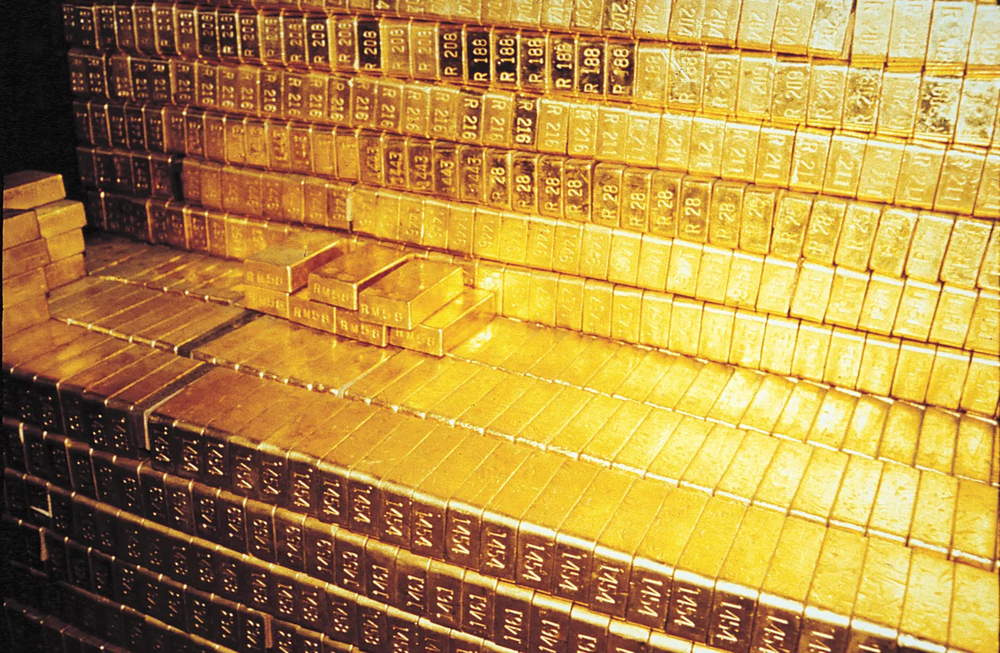

Back to Homepage
Gold Recipe

Description
Everyone knows that you can try to your luck at striking it rich by mining for gold in the Colorado Rockies, the Sierra Nevadas, etc. But those streams have long since run dry, and nowadays your odds of striking it rich are akin to finding a needle in a haystack. Fortunately for you, there's another way!
Ingredients
- A Red Supergiant star
- The Millennium Falcon (or starship with similar hyperdrive capabilities)
- A giant net (don't make the gaps too small; we're only after the big bucks!)
- Supernova-proof spaceshield
- cryosleep chamber
- lots and lots and lots of time
Steps
- Find a Red Supergiant star that will soon (preferable in the next few million years or so) collapse via a massive supernova explosion.
- Fly your spaceship out to within a few hundred lightyears of this star
- Freeze yourself in your cryosleep chamber and wait.
- When you wake up suddenly to find your ship in a state of utter disarray, it's happening. Prepare the net, raise the shield, and...crawl back into your sleep chamber and wait.
- After another few thousand years, reel your giant net in to claim your bounty.
- Set course back to earth and...crawl back into your sleep chamber to wait some more.
- When you return back to earth, several million years will have passed. In all likelihood, assuming earth still even exists and the human species hasn't wiped itself out of existence, humans will still have evolved to be something entirely different from yourself. Gold is likely worthless. It turns out your grand plan wasn't so great after all, but you do have one hell of a story to tell your new alien friends.